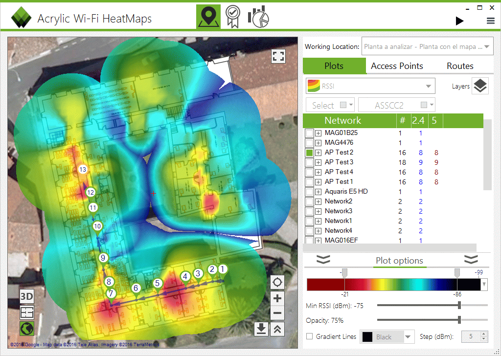

Réalisation d'une infrastructure réseau complète en équipe de 4 personnes, incluant le câblage, la configuration et l'optimisation d'un réseau local avec switch, routeur et point d'accès Wi-Fi.
Le projet combine déploiement physique, simulation sur Packet Tracer et analyse de la couverture Wi-Fi par heatmaps pour garantir une performance optimale.
Ce projet a permis de développer et valider les compétences suivantes du référentiel BUT R&T :
